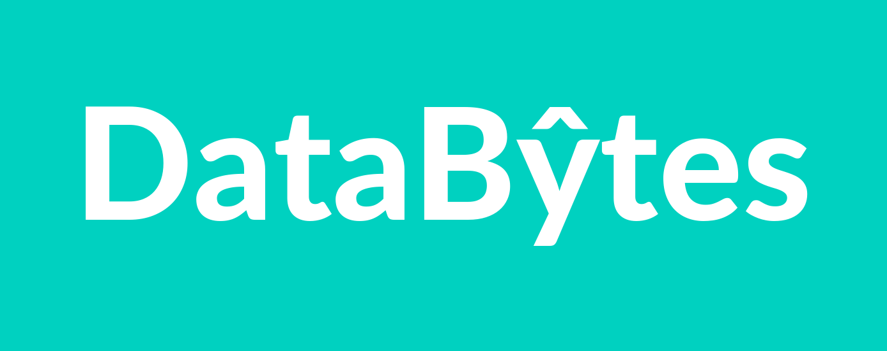
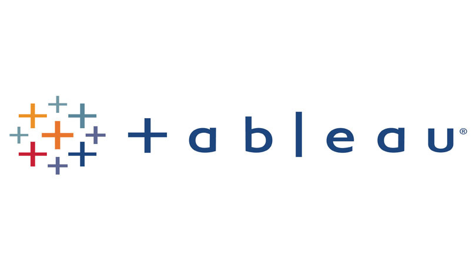

Project Echo
Built a two-factor authentication flow with FastAPI, Twilio, and MongoDB. I resolved Docker compatibility issues and documented setup steps to help stabilize deployments and team onboarding.

Application Support Analyst at Cogent Thinking, supporting the medEbridge CRM platform and managing incidents and service requests through Jira. I configure user access and workflows, perform UAT, and bring API integration and data skills to troubleshooting.
Built a two-factor authentication flow with FastAPI, Twilio, and MongoDB. I resolved Docker compatibility issues and documented setup steps to help stabilize deployments and team onboarding.

Built a Flask and React news application with MongoDB, third-party News APIs, sign-in, and dynamic category filtering. The project demonstrates troubleshooting across the user interface, backend, and external API layers, alongside recommendation and text-similarity features.
Automated product data collection with Python, Requests, and BeautifulSoup, then sent an email alert when a tracked price fell below a chosen threshold. Pandas handled cleanup and tracking; the project highlights a practical monitoring and notification workflow.
Built a Snowflake pipeline for CPCB Air Quality Index data from India’s Open Data API. Automated staged transformations with Dynamic Tables, Snowpark Python UDFs, and Tasks, then presented pollutant trends in Streamlit. This is a supporting example of API ingestion, data processing, and scheduled workflows.
Explored global COVID-19 data with T-SQL in SSMS: infection and mortality rates, vaccination progress, and per-capita impact. Built queries with joins, CTEs, and window functions to create views for BI dashboards.
Transformed messy Nashville housing data into a reliable dataset by standardizing dates, resolving missing values, normalizing fields, and removing duplicates with window functions - ensuring accuracy for downstream analytics and reporting.

SQL‑driven ETL into four tables (cases, deaths, vaccinations, populations), exploratory analysis, then Tableau visuals for trend monitoring and regional comparisons.
End-to-end Power BI project built on 700–800 real survey responses: data cleaning, DAX-based data modeling, and interactive dashboards showcasing respondent segments and KPIs.

Analyzed 5,000+ movies with Pandas and visualization libraries to uncover correlations between budget, ratings, runtime, and revenue. Performed feature engineering, exploratory analysis, and storytelling with charts.